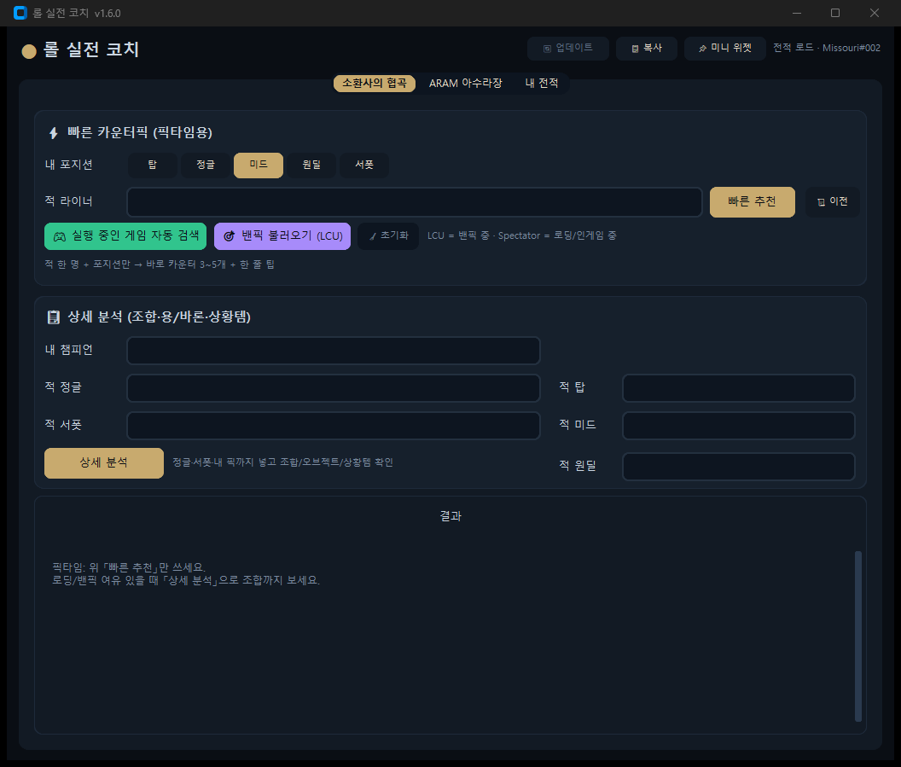

픽타임의 30초,
게임을 바꿉니다
밴픽 중엔 LCU로 적 픽을 읽어 카운터를 추천하고, 로딩 중엔 조합·상황템을 분석하고, 게임이 끝나면 복기가 자동으로 도착합니다. Riot 전적 + u.gg 메타 + Data Dragon을 한 곳에 묶은 개인 코칭 도구입니다.
GUI 전면 리디자인 — 기능은 그대로, 디자인만 새로
LoL 클라이언트에서 영감을 받은 딥 네이비 + 골드 팔레트. 하드코딩 색상 80여 곳을 디자인 토큰으로 정리하고, 결과 화면을 카드형으로 다시 그렸습니다.

- 커스텀 컬러 테마 — 딥 네이비 배경 + 골드 #C8AA6E 액센트, 입력칸·드롭다운·스크롤바까지 토큰화
- 골드 섹션 바 + 카드형 결과 — 섹션 헤더마다 골드 액센트 바, 결과 행은 보더 라운드 카드로 재구성
- S/A/B/C 등급 칩 — 카운터 GD@15·증강 티어를 골드/블루/그린/레드 칩으로 한눈에
- 탭·버튼·미니 위젯 스킨 — 선택 탭 골드 강조, 버튼 변형 체계(골드/패널/초록/보라), 위젯 골드 상단 라인
게임의 모든 순간에 코치가 곁에 있습니다
밴픽부터 복기까지 — 각 단계에서 서로 다른 기술이 동작합니다.
LCU 밴픽 감지
게임 클라이언트 로컬 API로 챔피언 셀렉트 중인 픽·밴을 실시간으로 읽습니다. API 키 없이, 밴픽이 끝나기 전에 카운터 추천이 준비됩니다. 밴픽 동안 픽이 바뀌면 자동으로 추적·갱신되며, ARAM 밴픽은 협곡 탭에서 눌러도 아수라장 탭으로 자동 전환됩니다.
Spectator + 조합 분석
Spectator V5로 인게임 진입을 감지해 적 5명과 내 챔프를 자동 입력합니다. 조합 위협, 용·바론 타이밍, 코어+상황템까지 한 화면에.
자동 복기
게임 종료를 폴당으로 감지해 방금 판의 승패 원인·잘한 점·개선점·다음 판 교훈을 자동으로 띄워줍니다.
탭마다, 목적이 다릅니다
소환사의 협곡 · ARAM 아수라장 · 내 전적 — 세 개의 탭과 공통 도구들.
픽타임 카운터픽 & 조합 분석
적 라이너 하나만 넣으면 바로 카운터가 나옵니다. 챔피언 입력은 전부 자동완성, 밴픽 중엔 픽이 바뀔 때마다 자동 갱신됩니다. 여유가 있으면 정글·서폿까지 넣고 조합 전체를 분석하세요.
- ⚡ 빠른 카운터픽 — u.gg GD@15(15분 골드 차) 기준 추천 픽 3~5개 + 30초 라인전 팁
- 📋 상세 분석 — 조합 위협 · 용/바론 운영 · 코어+상황템(적 조합 태그 분석) · 체크리스트
- 🎯 LCU 밴픽 자동 추적 — 밴픽 중 적/내 픽 자동 입력 → 즉시 카운터 추천. 픽이 바뀔 때마다 4초 간격으로 자동 갱신
- ⌨️ 챔피언 자동완성 — 적 라이너·내 챔프·정글·서폿·탑·미드·원딜 7개 입력 모두 한글/영문 자동완성 (Windows IME 조합 문자 지원)
- 📜 결과 히스토리 + 📋 복사 — '이전' 버튼으로 최근 20개 결과 복원, 헤더 복사 버튼으로 요약 클립보드 저장
- 🎮 인게임 자동 검색 — Spectator로 로딩 중 적 5명 + 내 챔프 감지
- 💡 아이템 툴팁 — 빌드 아이템에 마우스를 올리면 가격·설명 표시
증강 선택 코치
게임에서 제시된 증강을 입력하면 챔프 성향과 시너지로 순위를 매깁니다.
- Top5 추천 / 피할 증강 — Blitz 공식 한글명·설명·티어와 231종 성향 시너지
- 🇰🇷 Blitz 한국어 카탈로그 — 현재 패치 게임 데이터에서 231개 증강 설명·희귀도·티어를 갱신
- 칼바람 빌드 — Blitz ARAM-Mayhem 173챔피언 완성 아이템 코어 순서·빌드 링크, 누락 시에만 u.gg 폴백
- 🧭 Blitz 빌드 출처 — 챔피언별
/champions/{챔피언}/aram-mayhem페이지를 패치별로 패키지해 1~5코어 순서를 그대로 표시 - 🎯 LCU 내 픽 입력 — 고른 챔프 자동 채움 + 밴픽 중 리롤하면 브리핑 자동 갱신
- 🤖 ARAM 조합 AI 코칭 — 실행 중 게임에서 읽은 우리·상대 조합을 바탕으로 플레이 방식·증강·아이템을 현재 패치 기준으로 안내
- 🗂 증강 목록에서 선택 — Blitz 231종 검색 팝업, 클릭 한 번으로 제시 증강 입력칸에 추가
복기와 성장
최근 경기를 클릭하면 5v5 조합·오브젝트·학습 포인트가 열립니다.
- 경기 복기 — 승패 원인 · 잘한 점 · 개선점 · 다음 판 교훈
- 🏅 랭크 표시 — League V4 티어 · LP · 승률
- 📊 챔프 풀 진단 — 보정 승률로 집중/유지/정리 추천
- ⚡ 시작 시 자동 로드 — 앱을 켜면 마지막 프로필 전적을 자동으로 불러옵니다
- 🌐 서버 드롭다운 — kr/na1/euw1… 오타 걱정 없는 선택식 서버 설정
- CSV/JSON 파일 저장 + 멀티 프로필
게임을 방해하지 않는 설계
인게임 중에는 창 전환 없이 요약만 보고, 백그라운드에서는 조용히 캐시가 쌓입니다.
- 📌 미니 위젯 — 마지막 분석 요약을 '항상 위' 창으로. 게임 중 Alt+Tab 불필요
- 🔔 게임 종료 자동 복기 — 종료 감지 → 방금 판 복기 자동 표시 + 비프음·작업표시줄 플래시 알림, 게임 확인 후 폴링 45초→15초 단축
- 🗂 탭별 동시 작업 — 협곡 분석 중에도 전적 로드·ARAM 브리핑 실행 가능 (글로벌 잠금 제거)
- ⚡ 병렬 조회 + 이중 캐시 — 매치 상세 병렬 수집, 한 번 받은 경기는 즉시 로드. u.gg 빌드 디스크 캐시 72h + 네트워크 실패 시 마지막 빌드(stale) 폴백
- 🧹 캐시 자동 정리 — 매치 캐시 30일·1000개 제한, 정리 작업은 10분 스로틀
- ⏰ API 키 만료 안내 — 저장 시각 기준 22~24h 상태바 경고 + 401/403 재발급 안내 (기본 서버 kr)
- 🛡 업데이트 SHA256 — 인스톨러 자동 다운로드 후 해시 검증, 실패 시 설치 중단
- 🧱 GUI 모듈 분리 (v1.6.8) — 협곡/ARAM/전적/AI/업데이트를 탭 믹스인으로 분리해 유지보수 용이
- 💬 비모달 토스트 (v1.6.9) — 입력·LCU·네트워크 안내를 상태바+하단 토스트로, 인게임 중 창 차단 완화
- 📈 최근 트렌드 (v1.6.10) — 승률 추세·연승/연패·데스·KDA·CS@10 한눈에
- 🚫 밴 추천 (v1.6.10) — 내 챔프 기준 카운터 픽을 밴 후보로 안내
- ⌨️ 위젯 단축키 —
Ctrl+Shift+W토글 · 위치 기억 · Windows 전역 핫키(v1.6.11) - 🖼 트렌드 차트 (v1.6.11) — 승패 칩·KDA 막대로 페이스를 한눈에
- 👥 듀오 통계 — 같이 뛴 소환사 승률·판 수 (2판+)
- 🔍 화면 배율 (v1.6.12) — 0.9~1.2x 헤더 조절, 설정 유지
- 🚫 LCU 밴 반영 — 이미 밴된 픽은 추천에서 뒤로 밀고 표시
- ⚔ ARAM 조합 카드 — 인게임 조합 태그로 위협·시너지 요약
- 🔧 CLI 9종 — setup · profile · live · meta · coach · pool · export · test-key · gui, -v 디버그 로그
- 🔒 키는 로컬에만 — API 키는 .env/로컬 데이터 폴터에만 저장
진짜 자연어 코칭
opencode-go 게이트웨이로 오늘 날짜와 현재 롤 패치를 기준 삼아 매치업·조합·전적 기반 코칭을 생성합니다.
- 🤖 AI 코칭 카드 — 결과 맨 위에 큰 제목·큰 글씨·골드 테두리로 표시하고, 핵심 요약을 먼저 보여줌
- 🧭 ARAM 종료 상태 유지 — 게임 종료 복기가 도착해도 사용 중인 탭을 내 전적으로 강제 이동하지 않음
- 🔑 키 자동 감지 + 모델 선택 — opencode CLI 키 자동 사용, 수동 키는 마스킹 저장하고 5개 게이트웨이 모델을 내 전적 탭에서 선택
- 🛡 규칙 폴백 — 키가 없거나 생성 실패해도 기존 규칙 기반 분석은 그대로 동작
- 💸 비용 부담 없음 — 요청당 수백~수천 토큰 수준, 키는 저장소에 포함되지 않음
- 🎯 전체 조합 우선 분석 — 적 정글·서폿·탑·미드·원딜과 내 챔피언이 채워지면 5인 조합의 한타·진입·보호·오브젝트 운영을 우선 코칭
- 🔮 ARAM 실전 조합 코칭 — LCU/게임 자동 검색으로 가져온 우리·상대 조합을 기준으로 플레이 방식·증강 우선순위·아이템 빌드 안내
- 📅 패치 앵커 + 장애 폴백 — 오늘 날짜/현재 패치 고정, 500·타임아웃 재시도 후 실패하면 규칙 기반 결과를 그대로 유지
- 📌 미니 위젯 반영 — AI 코칭이 위젯에 바로 표시 — 결과 화면 스크롤 없이 게임 위에서 확인
터미널을 좋아한다면, 그대로
GUI와 같은 엔진을 쓰는 커맨드라인. 스크립트·자동화에 바로 넣을 수 있습니다.
믿을 수 있는 출처, 검증된 코드
라이브 데이터와 패키징된 카탈로그를 조합하고, 모든 경로를 테스트로 감쌉니다.
Riot Games API
Account V1 · Match V5 · League V4 · Spectator V5. 429 레이트리밋 존중 + 라우팅 호스트 허용목록.
u.gg 메타 (실시간)
현재 패치 빌드·승률·카운터 GD@15. 5분 메모리 + 디스크 영속 캐시 — 재시작·일시 차단에도 마지막 빌드 복원. 파서 헬스체크 스크립트로 구조 변경 조기 감지.
Data Dragon
챔피언·아이템·룬·스펠 한영 데이터. 증강 카탈로그 231종은 출처(provenance) 검증 포함 패키징.
품질 게이트
pytest 106개 전체 통과 · ruff 클린 · PyInstaller 원파일 exe + Inno Setup 설치 프로그램.